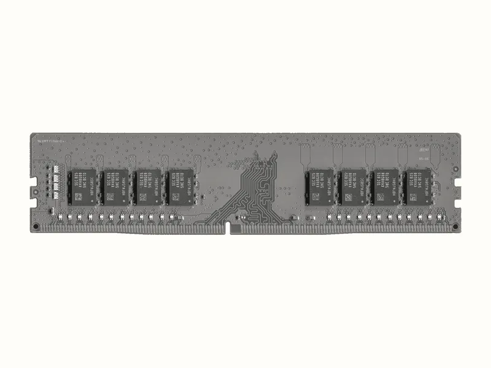
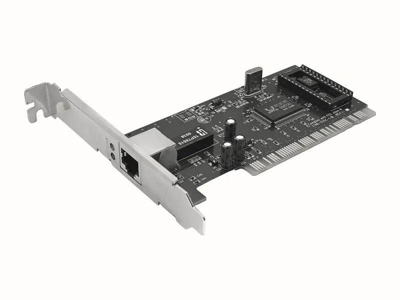
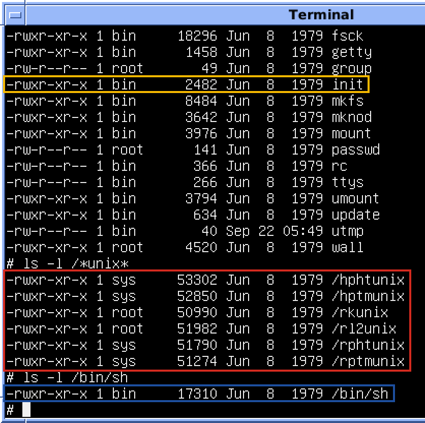

Server nằm ở đâu đó, và nó là một cái máy
Lúc viết code, bạn chạy app ở localhost:8080, tức trên chính laptop của bạn. Đưa app lên “server” hay lên
“cloud” thì nghe như đưa nó lên đâu đó trên mạng. Nhưng app vẫn chạy trên một cái máy có thật, cắm điện, có quạt, đặt trong
một tủ máy ở một toà nhà nào đó.
Server thường khác laptop ở chỗ nó không có màn hình, không có bàn phím, và chạy suốt ngày đêm. Nó hay nằm cùng hàng trăm cái máy khác trong một data center, có điện dự phòng và điều hoà. Người quản trị không ngồi trước nó mà điều khiển nó từ xa.

Còn bên trong thì vẫn là những món có trong laptop của bạn. Một server có bốn món chính, và mỗi món làm một việc cho app của
bạn. CPU chạy từng bước của chương trình. RAM giữ dữ liệu chương trình đang dùng, như các object trong heap của JVM. Ổ đĩa giữ
những thứ phải còn sau khi tắt máy: tệp .jar, log, dữ liệu của database. NIC nối máy với mạng, request của
người dùng đi vào qua nó. Hàng dưới cùng của Hình 1 là bốn món ấy.






Server cũng không phải lúc nào cũng mạnh hơn laptop. Laptop mình dùng để viết bài này có CPU AMD Ryzen 5 7535HS và 15,2 GB RAM, còn gói server rẻ nhất cho thuê trên Internet thì ít RAM hơn thế nhiều. Mạnh hay yếu thì trên bốn món ấy vẫn chạy một hệ điều hành, như Windows trên laptop của bạn. Nên những gì bạn sắp thấy trên laptop cũng có trên server: chương trình đang chạy, port, chuyện chia CPU và RAM. Chỉ khác là server thường chạy , nên lệnh để xem những thứ ấy cũng khác.
Từ tệp jar tới một process
Thử với sample-app.jar, tệp jar của một app Spring Boot nhỏ làm mẫu cho khoá; code của nó nằm ở thư mục lab/sample-app trong repo của khoá. Lúc chưa chạy, tệp ấy nằm trên ổ đĩa và không làm gì cả. Gõ java -jar
sample-app.jar thì hệ điều hành đọc chương trình java từ ổ đĩa lên RAM, cấp cho nó một vùng RAM riêng, rồi
cho CPU chạy nó. Chương trình java ấy, tức JVM, lại đọc tệp jar, nạp các class của bạn, và app bắt đầu nhận request.
Chương trình đang chạy như thế gọi là một process.
Hệ điều hành gán cho mỗi process một con số riêng, gọi là PID (process ID). App mẫu in PID của nó ngay lúc khởi động xong. Dòng dưới đây in ra khi mình chạy app ngày 14/11/2026 trên Windows 11, Java 25:
$ java -jar target/sample-app.jar
...
[sample-app] PID = 6088, listening on port 8080Tắt app rồi chạy lại thì PID đổi, có lần mình chạy lại ra 28132. Tệp jar vẫn là tệp ấy, nhưng mỗi lần chạy là một process
mới. Output của netstat, taskkill, tasklist dưới đây và ở phần lab đều chép từ lần chạy đầu, lúc PID là 6088.
Process 6088 ấy chiếm chỗ trong RAM nhiều hơn hẳn tệp jar mà nó chạy từ đó. Tệp sample-app.jar nặng 24.505.709 byte, khoảng 23 MB. Còn process chạy từ tệp ấy chiếm 183.884 KB trong RAM, khoảng 180 MB, gần gấp tám lần. Con số 183.884 KB ấy lấy từ cột Mem Usage của lệnh tasklist,
lệnh in danh sách process của Windows mà phần lab sẽ chạy. Phần chênh là chương trình java, các library nó nạp, và
mọi object app tạo ra lúc chạy.
Process giữ port
Ngoài RAM, process còn giữ cả port. App mẫu xin hệ điều hành cho listen ở port 8080, và từ lúc đó hệ điều hành ghi port 8080 kèm PID 6088 vào một bảng, mình gọi là bảng listening port.
Muốn xem bảng listening port thì dùng lệnh netstat -ano của Windows.
Mặc định netstat chỉ in các kết nối đang mở; option a in thêm những port đang listen, option n in địa chỉ và port bằng số, còn option o thêm cột
PID.
Output của netstat dài cả trăm dòng, nên mình lọc nó bằng lệnh grep. grep chỉ giữ những dòng chứa chuỗi bạn đưa cho nó, ở đây là :8080.
Muốn đưa output của netstat sang grep thì đặt dấu | giữa hai lệnh: output của lệnh bên trái thành đầu vào của lệnh bên phải, như dưới đây.
$ netstat -ano | grep ":8080"
TCP 0.0.0.0:8080 0.0.0.0:0 LISTENING 6088
TCP [::]:8080 [::]:0 LISTENING 6088Cột cuối là PID, cột trước nó là trạng thái; LISTENING nghĩa là port đang listen. Hai dòng ứng với hai loại địa chỉ, IPv4 và IPv6, nhưng cùng thuộc một process.
Hai dòng ấy chỉ nằm trong bảng listening port khi process 6088 còn sống. Process chết thì hệ điều hành xoá dòng của nó khỏi bảng, port 8080 lại trống, và ai gọi vào cũng bị từ chối. Mọi object app đang giữ trong RAM cũng mất theo, còn tệp jar trên ổ đĩa thì không mất gì. Muốn tự tay giết process theo PID thì dùng lệnh taskkill. Option /F bảo Windows giết ngay, nên app không kịp chạy đoạn code nó thường chạy trước khi tắt, như đóng kết nối tới database.
Có điều option của taskkill mở đầu bằng dấu /, không phải dấu - như netstat. Git Bash coi chữ nào mở đầu bằng một dấu / là path và đổi nó thành Windows path, nên taskkill không còn nhận ra option. Chữ mở đầu bằng hai dấu // thì Git Bash không đổi thành path mà chỉ bỏ bớt một dấu, nên taskkill vẫn nhận được /F. Vì thế trong Git Bash phải gõ //F và //PID:
$ taskkill //F //PID 6088
SUCCESS: The process with PID 6088 has been terminated.
$ curl -sS http://localhost:8080/
curl: (7) Failed to connect to localhost port 8080 after 2220 ms: Could not connect to serverAi cấp RAM, ai ghi bảng listening port
Ở phần trước, mọi việc đều do hệ điều hành làm: cấp vùng RAM, ghi bảng listening port, xoá dòng port của process khỏi bảng khi process chết. Nhưng hệ điều hành gồm rất nhiều thứ, cả màn hình đăng nhập lẫn trình quản lý tệp. Phần làm những việc kể trên là lõi của nó, chương trình đầu tiên của hệ điều hành được nạp lên khi máy khởi động và chạy suốt tới khi tắt máy. Lõi ấy gọi là kernel, layer giữa của Hình 1.


init là chương trình đầu tiên kernel chạy, ngay sau khi kernel được nạp xong.Process không phải việc gì cũng nhờ kernel. Nó chạy trên CPU và đọc ghi vùng RAM của mình trực tiếp. Nhưng muốn thêm RAM, đọc một tệp hay listen ở một port thì nó phải xin kernel, và kernel kiểm tra process có được phép làm việc đó không rồi mới làm hộ. Lời xin ấy gọi là system call, mũi tên đi xuống giữa layer process và layer kernel ở Hình 1.
Process đọc ghi RAM không cần hỏi kernel, vậy cái gì ngăn nó đụng sang vùng của process khác? Kernel ghi vùng RAM nào thuộc process nào vào một bảng. Mỗi lần một process đọc ghi RAM, CPU tra bảng ấy, và nếu chỗ đó thuộc process khác thì CPU chặn lại rồi báo cho kernel. Bảng listening port cũng do kernel giữ, nên một port đã ghi cho process này thì process khác xin sẽ bị từ chối.
Chia CPU: mỗi process một lượt
Một CPU ngày nay có nhiều core, và mỗi lúc một core chỉ chạy được một chương trình. CPU của laptop mình có 6 core, mà lúc đếm thì Windows đang chạy 264 process. Không thể chia mỗi process một core được, nên kernel cho một process chạy trên một core trong một khoảng rất ngắn, rồi cất nó sang một bên, cho process khác chạy, và cứ xoay vòng như vậy rất nhiều lần mỗi giây. Ô CPU ở Hình 1 vẽ bốn core và năm process, process nào chưa tới lượt thì đứng ở hàng chờ.
Vì kernel đổi lượt rất nhanh, bạn thấy mọi process như cùng chạy một lúc. Còn khi có quá nhiều process cùng cần CPU, mỗi process phải chờ lượt lâu hơn, nên app trả lời chậm đi mà vẫn chạy.
Nói kỹ hơn thì kernel chia lượt cho từng thread chứ không cho cả process. Process java của bạn có
nhiều thread, và các thread ấy có thể chạy cùng lúc trên nhiều core. Hình 1 vẽ mỗi process thành một khối cho dễ nhìn.
Chia RAM: mỗi process một vùng
RAM thì không chia theo lượt như CPU. Vùng RAM mà kernel đã cấp cho một process thì nằm yên ở process ấy, tới khi process trả lại hoặc chết, nên app Spring Boot giữ khoảng 180 MB thì 180 MB ấy coi như đã có chủ. Cứ process nào xin thêm thì RAM còn trống lại ít đi.
Nhiều máy dành sẵn một vùng trên ổ đĩa để khi RAM sắp hết, kernel đẩy bớt dữ liệu ít dùng xuống đó; vùng ấy gọi là swap. Lúc kernel phải chuyển dữ liệu qua lại giữa RAM và swap thì máy chậm hẳn đi, vì ổ đĩa chậm hơn RAM rất nhiều. Swap lại có cỡ giới hạn, nên nếu các process cứ xin thêm RAM thì máy chỉ hết chỗ muộn hơn chứ vẫn hết.
Khi RAM hết hẳn
CPU không đủ cho mọi process thì kernel bắt chúng chờ lượt. Vậy RAM hết thì sao, kernel có bắt process chờ không? Không, vì chờ cũng vô ích: process đang giữ RAM không tự trả ra chỉ vì có process khác cần. Khi không còn chỗ nào để cấp, kernel Linux chọn một process rồi giết nó, lấy lại toàn bộ vùng RAM của nó cho các process còn lại. Phần việc này của kernel gọi là OOM killer, OOM là viết tắt của out of memory, tức hết bộ nhớ.
Windows không có OOM killer, nên mình thử trên chạy trong của laptop. Mình chạy thử ngày 14/11/2026, trên kernel Linux 6.18. Process
đem ra thử là một chương trình Python nhỏ, cứ 0,2 giây lại giữ thêm 50 MB; code nằm ở tệp eat-ram.py trong thư mục
lab của bài.
Trong 15,2 GB RAM của laptop, WSL cho Ubuntu ấy dùng tối đa 10 GB. Con số này đọc từ lệnh free -h,
lệnh in lượng RAM mà Ubuntu thấy; option -h ghi số bằng GB, MB cho dễ đọc:
$ free -h
total used free shared buff/cache available
Mem: 10Gi 1.2Gi 4.9Gi 4.7Mi 4.7Gi 9.5GiĐể khỏi phải làm đầy cả 10 GB, mình chạy chương trình Python bằng lệnh systemd-run. Lệnh này đặt cho riêng process ấy một giới hạn RAM. Option -p MemoryMax=300M cho nó tối đa 300 MB, còn option -p MemorySwapMax=0 cấm đẩy dữ liệu xuống swap, nên chạm 300 MB là hết chỗ ngay.
Option --scope cho lệnh chạy ngay trong
cửa sổ đang gõ và in output ra đó. Chữ ở đầu chạy lệnh bằng
quyền quản trị của Linux, vì đặt giới hạn RAM cần quyền ấy:
$ cd lab
$ sudo systemd-run --scope -p MemoryMax=300M -p MemorySwapMax=0 python3 eat-ram.py
held 50 MB
held 100 MB
held 150 MB
held 200 MB
held 250 MB
$ echo $?
137Process in tới 250 MB rồi im bặt, không có dòng lỗi nào. Nó không kịp in gì, vì kernel giết nó ngay khi nó xin
vượt giới hạn. Lệnh echo $? in exit code của lệnh vừa chạy, tức con số một chương trình trả lại khi kết thúc, giống số bạn truyền vào System.exit() trong Java. Process thoát êm thì mã là 0, còn 137 nghĩa là process bị giết ngay, không được chạy thêm dòng code nào.
Mã 137 mới cho biết process bị giết, chưa cho biết ai giết. Kernel ghi việc ấy vào log riêng của nó, đọc bằng lệnh dmesg. Option -i của grep bảo nó không phân biệt chữ hoa, chữ thường:
$ sudo dmesg | grep -i "killed process"
Memory cgroup out of memory: Killed process 2628 (python3) total-vm:323280kB, anon-rss:306432kB, ...Dòng ấy nói kernel đã giết process PID 2628, tên python3. Mục anon-rss là
phần RAM process tự xin để giữ dữ liệu, ở đây là 306.432 KB, khoảng 299 MB, sát giới hạn 300 MB.
Còn chữ “Memory cgroup” ở đầu dòng là vì systemd-run đặt process vào một nhóm có giới hạn RAM riêng; Linux gọi nhóm ấy là cgroup. Nếu cả máy hết
RAM thì dòng mở bằng “Out of memory”, phần còn lại cùng một khuôn.
Kernel chọn giết ai
Ở ví dụ trên, cgroup giới hạn 300 MB chỉ chứa một process, nên kernel không phải chọn. Trên một server thật thì có nhiều process, và kernel chấm điểm từng process, chủ yếu theo lượng RAM nó đang giữ, rồi giết process có điểm cao nhất. Nếu server chạy app Spring Boot thì app Java thường là một trong những process giữ nhiều RAM nhất, vì ngoài heap, JVM còn giữ RAM cho các class đã nạp và cho các thread.
Nếu server có Nginx đứng trước app thì sau một lần RAM đầy, người dùng gọi vào hay thấy 502. Mình từng nghĩ 502 ấy là vì app phải khởi động lại mà RAM không còn đủ chỗ cho nó. Nghe hợp lý, vì 502 hiện ra ngay sau lúc RAM đầy. Hình 2 dựng lại một lần RAM đầy như thế, theo thứ tự: server chạy Nginx, PostgreSQL và app Spring Boot, rồi nửa đêm một script sao lưu chạy và giữ RAM mỗi lúc một nhiều.
- Server có 4 GB RAM. Kernel, Nginx, PostgreSQL và app Java đã chiếm phần lớn.
- Script sao lưu chạy lúc nửa đêm và giữ thêm RAM mỗi lúc một nhiều.
- RAM đầy. Kernel không còn chỗ để cấp cho ai.
- OOM killer chấm điểm:
javagiữ nhiều RAM nhất, nên bị giết. - RAM trống lại. Người dùng gọi vào thì Nginx trả 502, vì app không còn chạy.
Script mới là thứ làm đầy RAM, nhưng kernel lại giết app, vì app đang là process lớn nhất. Còn chuyện app
thiếu chỗ để khởi động lại thì sai, vì có ai khởi động lại nó đâu. Nó đang chạy thì bị giết, và kernel lấy lại RAM của nó ngay,
nên lúc người dùng thấy 502, RAM lại đang còn chỗ. Muốn biết app có bị giết kiểu này không thì tìm dòng Killed process
trong dmesg như ở trên, vì app bị giết không kịp ghi gì vào log của nó.
Vậy gõ java -jar trên server thì kernel nạp chương trình lên RAM thành một process,
chia cho nó CPU theo lượt và một vùng RAM riêng, rồi khi app xin port 8080 thì ghi PID của nó vào bảng listening port. Còn app đang chạy ngon
mà tự nhiên biến mất thì một lý do hay gặp là RAM của cả máy hết, và kernel đã chọn giết nó để cứu những process còn lại.
Lab: sinh một process, tìm nó, tắt nó
Cả tám bước chạy trên Windows, bằng Git Bash, cửa sổ dòng lệnh đi kèm khi cài Git for Windows. Bạn mở Git Bash bằng cách bấm
phím Windows, gõ git bash rồi bấm Enter; cửa sổ hiện ra có dòng cuối kết thúc bằng dấu $, Git Bash in dấu
ấy để báo đang chờ bạn gõ lệnh. Trong các khối dưới, dòng mở đầu bằng $ là lệnh bạn gõ: gõ phần đứng sau dấu
$, không gõ chính dấu ấy, rồi bấm Enter; các dòng còn lại là output.
Output trong các khối là của mình, chạy ngày 14/11/2026 trên Windows 11; PID và số KB trên máy bạn sẽ khác. Phần kernel giết process khi hết RAM thì không có bước lab, vì Windows không có OOM killer; output ở phần hết RAM là mình chạy trên một máy Linux.
Kiểm tra Java và Maven
App mẫu cần Java 21 trở lên để chạy, và Maven để build. Mở Git Bash rồi gõ lần lượt hai lệnh dưới, mỗi lệnh bấm Enter một lần. Hai lệnh này in version; dòng đầu output của mỗi lệnh là dòng cần đọc. Nếu Git Bash báo
command not foundthì máy chưa cài thứ ấy, hoặc vừa cài mà cửa sổ Git Bash đã mở từ trước đó. Chưa cài thì cài bằng bộ cài chính thức; cài xong thì đóng Git Bash rồi mở lại.$ java -version java version "25.0.2" 2026-01-20 LTS ... $ mvn -v Apache Maven 3.9.15 (98b2cdbfdb5f1ac8781f537ea9acccaed7922349) ...Lấy repo của khoá về máy
Vẫn trong cửa sổ ấy, gõ lần lượt hai lệnh dưới. Lệnh
git clonechép cả repo về một thư mục mới têndevops-self-learning, nằm trong thư mục mà Git Bash đang đứng. Git Bash mở từ menu Start thì đứng ở thư mục riêng của user Windows,C:\Users\<tên bạn>, nên repo vềC:\Users\<tên bạn>\devops-self-learning. Rồi lệnhcdđưa bạn vào thư mục app mẫu trong repo ấy. Repo đã có trên máy thì bỏ qua lệnh đầu, chỉcdvào chỗ bạn để repo.$ git clone https://github.com/AnhTuan2111/devops-self-learning.git $ cd devops-self-learning/lab/sample-appBuild tệp jar
Gõ hai lệnh dưới trong cửa sổ đang đứng ở thư mục
sample-app. Option-qbảo Maven chỉ in khi có lỗi, nên build xong mà không thấy dòng nào là được. Lần đầu Maven tải library về nên chạy lâu hơn các lần sau. Rồi lệnhls -lin thông tin của tệp vừa build; cột số đứng trước ngày là cỡ tệp, tính bằng byte.$ mvn -q package $ ls -l target/sample-app.jar -rw-r--r-- 1 pc 197121 24505709 Oct 30 00:34 target/sample-app.jarTệp của mình còn mang ngày 30/10, vì code không đổi từ hôm đó nên
mvn -q packagekhông đóng gói lại tệp. Bạn build lần đầu thì thấy ngày hôm nay.Chạy app, ghi lại PID
Vẫn ở cửa sổ ấy, gõ lệnh dưới để chạy tệp jar như mọi app Spring Boot. Log khởi động in vài chục dòng; dòng cần đọc là dòng cuối, nơi app mẫu in PID của nó. Ghi lại con số ấy, các bước sau cần nó. Cứ để app chạy ở cửa sổ này.
$ java -jar target/sample-app.jar ... [sample-app] PID = 6088, listening on port 8080Mở cửa sổ thứ hai, tìm process giữ port 8080
Cửa sổ đầu đang bận chạy app nên không gõ được lệnh khác. Bạn mở thêm một cửa sổ Git Bash, cũng bằng phím Windows rồi gõ
git bash, rồi gõ lệnhnetstatdưới vào cửa sổ mới, như ở phần process; lệnh này chạy ở thư mục nào cũng được. PID ở cột cuối phải trùng con số app in ra ở bước 4. Không có dòng nào thì kiểm tra lại cửa sổ đầu: app phải in xong dòngPID = ..., listening on port 8080; chưa thấy dòng ấy thì chờ thêm vài giây rồi chạy lạinetstat.$ netstat -ano | grep ":8080" TCP 0.0.0.0:8080 0.0.0.0:0 LISTENING 6088 TCP [::]:8080 [::]:0 LISTENING 6088Từ PID ra tên chương trình và RAM nó giữ
Gõ lệnh dưới vào cửa sổ thứ hai. Lệnh
tasklistin danh sách process; option//FIkèm điều kiện"PID eq 6088"chỉ giữ lại process có PID ấy,eqnghĩa là bằng. Thay 6088 bằng PID của bạn. CộtImage Namecho biết process là chương trình nào, cộtMem Usagelà RAM nó đang giữ.$ tasklist //FI "PID eq 6088" Image Name PID Session Name Session# Mem Usage ========================= ======== ================ =========== ============ java.exe 6088 Console 3 183,884 KSo tệp trên đĩa với process trong RAM
Lấy số ở cột
Mem Usagecủa bước 6 chia cho cỡ tệp ở bước 3, sau khi đổi về cùng đơn vị. Trên máy mình phép chia ra gần tám, như ở phần process. Máy bạn ra số khác, nhưng process vẫn lớn hơn tệp nhiều lần.Tắt app bằng PID, xem port trống lại
Cả ba lệnh dưới gõ vào cửa sổ thứ hai. Lệnh đầu,
taskkill, giết process; thay 6088 bằng PID của bạn. Ở cửa sổ đầu, log của app dừng lại và dấu$hiện ra, tức là cửa sổ ấy lại gõ lệnh được. Lệnh thứ hai gọi lại app, và curl báo không kết nối được. Lệnh cuối chạy lạinetstatđể xem port 8080 đã trống chưa. Có lầnnetstatcủa mình in dòng 8080 với trạng tháiFIN_WAIT_1hayCLOSEDthay choLISTENING, chạy lại thì hết; mình chưa tìm ra vì sao. Nên lệnh cuối lọc thêm chữLISTENING, trạng thái của port đang listen. Lệnh ấy không in gì là port 8080 đã trống, máy về như lúc chưa làm lab.$ taskkill //F //PID 6088 SUCCESS: The process with PID 6088 has been terminated. $ curl -sS http://localhost:8080/ curl: (7) Failed to connect to localhost port 8080 after 2220 ms: Could not connect to server $ netstat -ano | grep ":8080" | grep LISTENING
Nguồn đọc thêm
- Linux kernel,
mm/oom_kill.c, mã nguồn của OOM killer, nơi in dòng “Killed process” trong bài. github.com/torvalds/linux/blob/master/mm/oom_kill.c - man7.org, trang
proc_pid_oom_score(5): điểm kernel chấm cho từng process khi hết RAM. man7.org/linux/man-pages/man5/proc_pid_oom_score.5.html - Microsoft, trang hướng dẫn lệnh
tasklist. learn.microsoft.com/…/windows-commands/tasklist - Microsoft, trang hướng dẫn lệnh
netstat. learn.microsoft.com/…/windows-commands/netstat - Randall Munroe, xkcd 908, The Cloud. xkcd.com/908